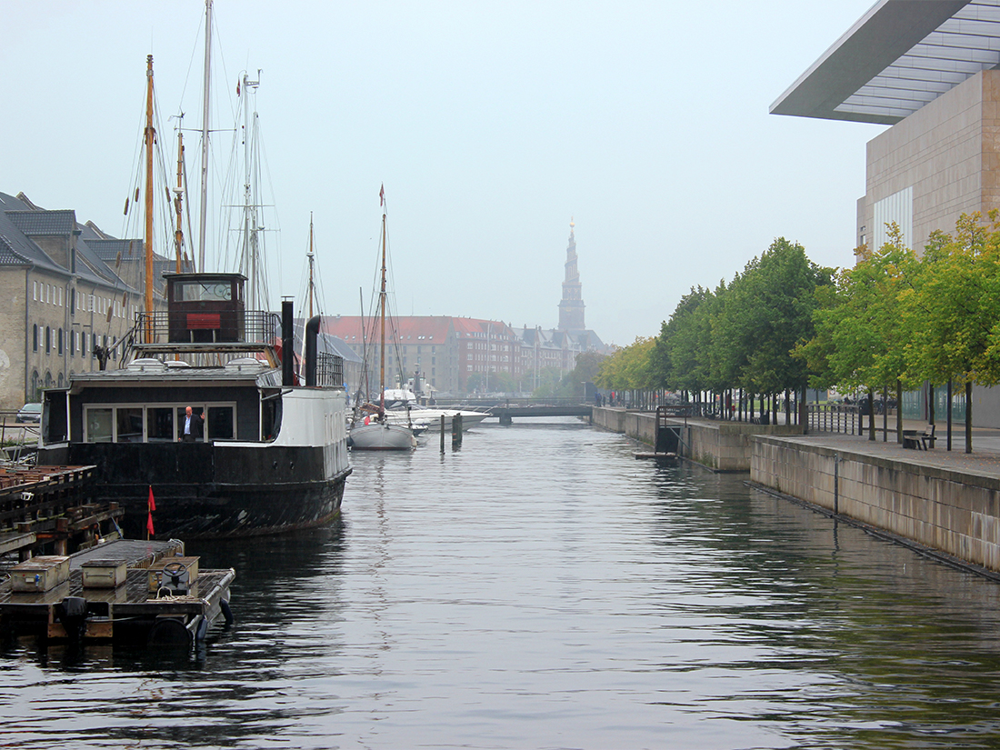
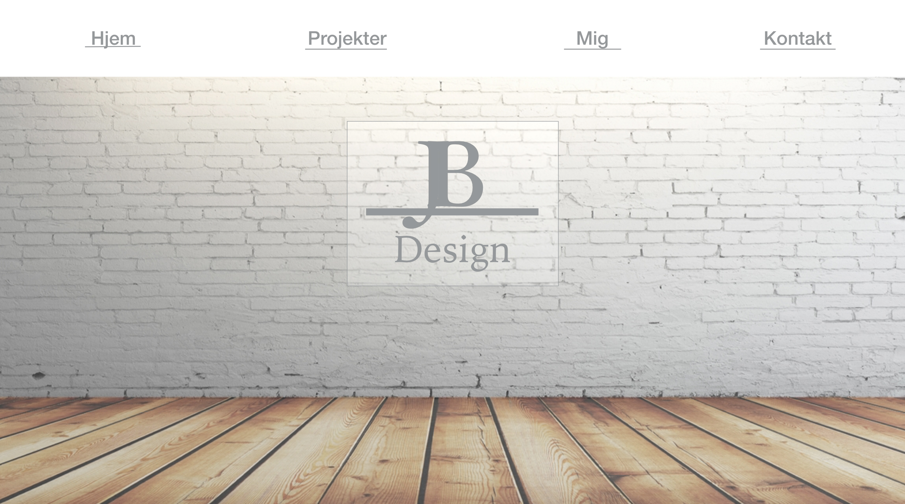
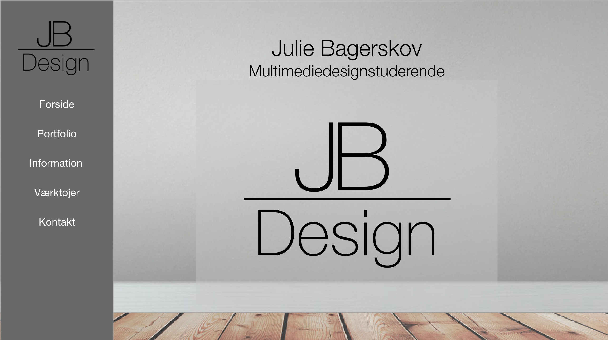

Drøm din portfolio
Hvad har jeg lavet?
Denne opgave gik ud på, at man skulle lave sin første prototype af sin portfolio.
Her skulle man aflevere 1 Pdf-fil på max 3 sider og max 10MB, som beskrev og dokumenterede prototypen.
Læringsprocessen
Vi startede ud med at blive introduceret til Photoshop. Her skulle vi redigere og designe et billede, som vi i grupper havde taget på en udflugt rundt i København. Heraf fik vi nogle krav, som vi skulle opfølge for at få nogenlunde et kendskab til Photoshop. Nogle af kravene lød bl.a. at vi skulle fjerne et element på billedet og derefter fylde hullet ud, så det passede til billedet. Derfter skulle vi tilføje et element som oprindeligt ikke havde været på billedet, så det passede ind. Bagefter skulle vi rette lysforholdene, beskære og ændre størrelsen på formattet.
Hele idéen med at skulle gennemgå photoshop til at starte med er, at man bruger photoshop rigtig meget under projekterne. Det kan godt være, at der ikke er et projekt direkte med henblik på selve programmet, men man bruger programmet til de billeder, man skal have tilføjet til sit produkt. Derfor gennemgik vi de basale værktøjer, som man kan få brug for, hvorefter når man har lært det basale, så er det nemmere at lære de mange andre funktioner, Photoshop besidder.

Udover Photoshop blev vi også introduceret til programmet Experience Design, som er et program, hvor man kan designe mockups og prototyper.
Mit redesign af projektet
Mit redesign af dette projekt er prototypen, som jeg har lavet i forhold til denne nye portfolio. Jeg har ændret en del fra den første prototype, jeg lavede til mit nye online resultat.
Noget af det første jeg lavede om var mit baggrundsbillede.
Som vist på billederne og kan ses på produktet, så er dette projekts
baggrundsbillede en murstensvæg. Denne murstensvæg blev udskiftet
med en mere ren, simpel og elegant grå væg.
Jeg valgte at skifte væggen ud, da jeg følte at murstensvæggen
var for forstyrrende. Derudover ville jeg gå efter et mere simpelt og
rent look til dette redesign af portfolien.
Jeg valgte så også et lidt mørkere og velslibet gulv til mit baggrunds-
billede, som passede bedre til den nye væg.
Derudover har jeg flyttet min menubar fra horisontal til
en vertical. Jeg har haft erfaring med, at siden godt kan føles meget forstrukket og zoomet ind, når man bruger den fulde bredde, derfor ville jeg prøve at skære sidens bredde lidt ved at placere navigationsbaren i siden. Jeg valgte så at beholde den, da jeg synes, den giver et mere elegant design.
I mit første projekt blev jeg anbefalet at ændre mine runde knapper under projektoversigten, da de ikke passede så godt ind i mit mere firkantet design, så det har jeg gjort.
Jeg har også valgt at ændre farvetemaet til et mere gråligt, da det giver en god kontrast i forhold til, hvis jeg havde brugt en ren hvid side. Den grålige farve er dog stadig hen af neutral, da den ikke virker forstyrrende.

